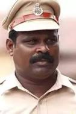

.jpg)
Drishyam (transl. Visual) is a 2015 Indian Hindi-language crime thriller film directed by Nishikant Kamat. A remake of the eponymous 2013 Malayalam film starring Mohanlal, the film stars Ajay Devgn, Tabu and Shriya Saran. Ishita Dutta, Mrunal Jadhav, Rajat Kapoor, Kamlesh Sawant and Rishab Chadha play supporting roles. The film was released in theatres worldwide on 31 July 2015, and in China in 2022. Upon its release, it was a critical and commercial success. A sequel titled Drishyam 2 was released in 2022. Vijay Salgaonkar is an orphan who dropped out of school at the fourth grade. He then becomes a businessman in Goa. He is married to Nandini and has two daughters; Anju, his adopted elder daughter and Anu, his youngest daughter. His only interest, apart from his family, is watching films. During camp, a nude video of Anju gets recorded. The culprit, Sameer ''Sam'' Deshmukh, is the son of the Inspector-general of police Meera Deshmukh. When Sam meets Anju, he tries to blackmail her for sexual favors. The same night, he turns up at her house and when Nandini arrives, she pleads with him to delete the video. Nandini pleads Sam to leave Anju alone; he agrees on the condition that Nandini have sex with him. Anju while trying to knock the phone with the video out of Sam's hand, strikes his head accidentally with a rod, which kills him. Anju and Nandini bury Sam's dead body in a compost pit, which is seen by Anu. The next morning, when Vijay comes home, he is informed of the incident by Nandini and he devises a way to save his family from the police. He constructs an elaborate Drishyam (or visual) among all connected witnesses' minds by skillfully lying to them just the right amount. He re-constructs their alibis by taking a trip after the fact to Panaji for a religious sermon, which of course they miss because they go there the day after. However he returns for the same trip a week later and reinforces their earlier visit - with just the dates changed so the witnesses will corroborate their presence on the day of the murder. Then he removes Sam's broken phone and disposes of his car in a lake, which is seen by Sub-inspector Laxmikant Gaitonde, who has a grudge against Vijay. Meera, realizing that her son has gone missing, starts an investigation. She begins to suspect Vijay and his family and they are called in for questioning. Having predicted that this would happen, Vijay coaches his family on how to change their alibis. When questioned individually, the family stick to their alibis. Meera questions the owners of the establishments that Vijay had met during his trip. Their statements prove Vijay's alibi. Meera deduces that Vijay had gotten acquainted with the owners, and manipulated them into lying. Meera arrests the family and Gaitonde uses force to beat the truth out of them. Meera learns about the video that Sam made about Anju from Sam's friend Alex. After Gaitonde threatens to hit Anu, she discloses the truth. Anu reveals the place where Sam is buried. The police dig up the compost pit where Sam is buried, only to find the remains of a calf. Vijay protests to the crowd that Gaitonde had hit Anu. Gaitonde attempts to attack Vijay, but is stopped by an angry mob who thrash him. Following the incident, Gaitonde is suspended and Meera resigns. Meera and her husband, Mahesh summon Vijay where they ask for his forgiveness over Sam's perverted behavior. They also reveal that they are going to live with Meera's brother in London. They ask Vijay to disclose the truth behind their Sam's disappearance, to which he reveals to indirectly killing him. He reveals that he would go to any lengths to protect his family and asks them for forgiveness. In the present, Vijay is called to sign a register at the police station. While signing the register, the police inspector tells Vijay that the police are not fools and promises to one day find the body. Vijay replies by telling the officer that he respects the police and believes that the police and the police station will always be there to help the people. As he walks out of the station, flashbacks are shown of Vijay walking out of an unfinished police station, implying that he buried Sam's body beneath the police station.
|
 |
|||||
| Ajay Devgan | Ishita Dutta | Mrunal Jadhav | Tabu | Kamlesh Sawant | Rajat Kapoor | Shriya Saran |